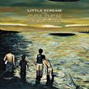

Music Reviews
-
EMA Past Life Martyred Saints
EMA is incredibly honest, confident and knows her way around a guitar. Can that carry her through an entire album of material?
Andrew Baer is alternately bored and thrilled... -
Miles Kane Colour Of The Trap
Miles Kane, the ex-Little Flame/Rascal/Shadow Puppet, has gone out on a limb by making Colour Of The Trap, his first solo record. The outcome? Well, it's not exactly groundbreaking...
Joe Iliff doesn't want to dwell too long... -
Vessels Helioscope
Generous instrumentals, delightful vocals, and a surprising dark side, oh my! Vessels takes you down a sprightly path on Helioscope. Try not to get lost.
Randi Dietiker reviews... -
Mick Harvey Sketches from the Book of the Dead
Bad Seeds man goes solo, with enthralling results.
Daniel Dylan Wray reviews... -

The High Llamas Talahomi Way
An easy group to dismiss, The High Llamas superficially lightweight brand of Easy Listening conceals an underlying musical complexity and poignant lyricism.
Sam Redlarks lets the sunshine in...
-
The Pains of Being Pure at Heart Belong
Belong is big, bombastic, excited — but it won't make waves like the band's first album.
Matt Montgomery reviews... -

Wild Beasts Smother
Wild Beasts follow-up their Mercury-nominated release with a complex, literate look into the hazards of love.
Juan Edgardo Rodríguez feels mildly disturbed... -
Gypsyblood Cold In The Guestway
After a previous falling-out, Gypsyblood’s Adam Jones and Kyle Victor take another shot at the “band” thing.
Sean Caldwell reviews... -

Little Scream The Golden Record
Montreal’s music scene has released a new indie-folk darling. Little Scream receives a warm welcome.
Randi Dietiker appears to be pleased... -
Mono/Poly Manifestations EP
Mono/Poly has pushed his music to new heights since his 2010 debut, recording an EP full of huge synths, massive bass and addictive beats.
Andrew Baer loves walking across campus to this...